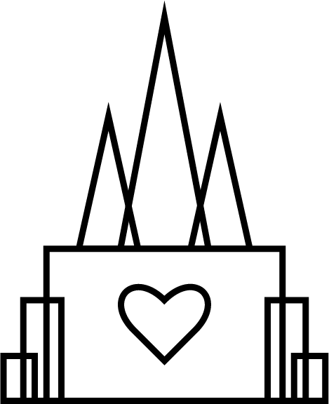
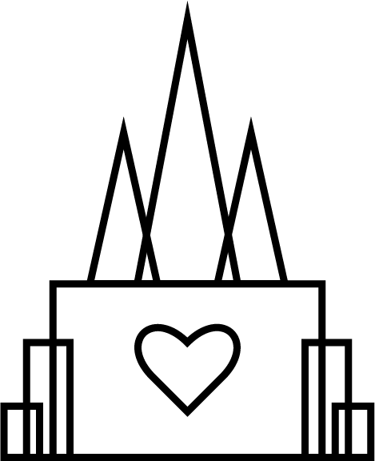

Receptions
Temple Inn & Suites is the ideal all-in-one destination for temple wedding receptions and accommodations. Each of our locations features an event hall that is designed for wedding receptions. We provide options for catering and setup, so you can focus on the important part: getting married! Group room blocks can also be reserved for guests of the wedding. Call or email us today to reserve your date!
Reception Services Available:
- - Catering options include wedding dinners, luncheons, or “line-style” appetizers and snacks.
- - Stage with microphones and speakers
- - Linens and chair covers
- - Faux floral arrangements for tables
- - Projector and/or 4K TV screens
- - Set-up and clean-up
- - *Tables and chairs are provided with all reception reservations